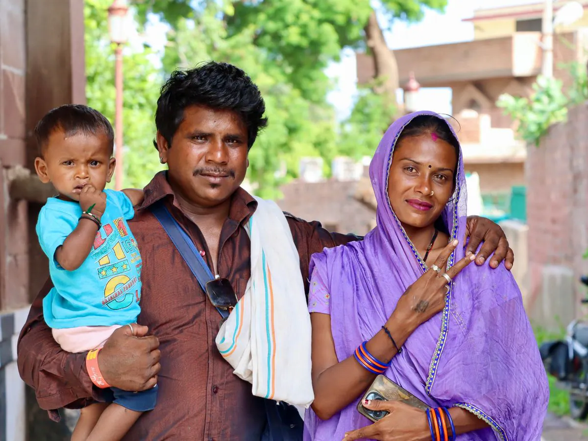

Stress has become a part of modern life. Whether you're a student preparing for exams, a working professional managing deadlines, a parent balancing responsibilities, or someone navigating life's everyday challenges, stress can affect both your mental and physical well-being.
While occasional stress is a natural response to challenging situations, prolonged or unmanaged stress can impact your sleep, relationships, productivity, and overall quality of life.
The good news is that small, consistent habits can help you manage stress effectively and improve your emotional well-being. In this article, we'll explore ten practical strategies you can incorporate into your daily routine to build resilience and maintain better mental health.
01Start Your Day with Intention
Instead of immediately checking your phone or emails, spend a few quiet moments planning your day. Deep breathing, stretching, or writing down your priorities can help you begin the day with clarity and focus.
Tip: Ask yourself, “What is one positive thing I want to accomplish today?”
02Prioritize Quality Sleep
Sleep is essential for emotional balance and cognitive function. Adults generally benefit from 7–9 hours of quality sleep each night.
To improve your sleep:
- Maintain a consistent bedtime.
- Avoid excessive screen time before sleeping.
- Create a calm and comfortable sleep environment.
03Stay Physically Active
Regular movement helps reduce stress hormones while improving mood and energy levels.
You don't need an intense workout. Activities like walking, yoga, cycling, or dancing for 30 minutes a day can make a significant difference.
04Practice Mindfulness
Mindfulness encourages you to focus on the present moment instead of worrying about the past or future.
Simple mindfulness practices include:
- Deep breathing
- Guided meditation
- Mindful walking
- Paying attention to your surroundings
Even five minutes of mindful breathing can help calm your mind.

05Nourish Your Body
What you eat can influence how you feel. Try to:
- Stay hydrated.
- Eat balanced meals.
- Include fruits, vegetables, whole grains, and protein.
- Reduce excessive caffeine and sugary snacks.
A healthy body supports a healthy mind.
06Stay Connected
Strong relationships provide emotional support during difficult times. Make time to:
- Talk to family or friends.
- Share your thoughts with someone you trust.
- Participate in community activities or hobbies.
Sometimes, a simple conversation can ease emotional pressure.

07Set Realistic Boundaries
It's okay to say “no” when your schedule becomes overwhelming. Setting healthy boundaries helps prevent burnout and allows you to focus on what truly matters.
Protecting your well-being is not selfish. It is necessary.
08Take Breaks Throughout the Day
Working continuously without breaks can reduce productivity and increase stress. Short breaks to stretch, walk, or simply breathe deeply can help refresh your mind and improve concentration.
09Make Time for Activities You Enjoy
Hobbies and leisure activities play an important role in mental wellness. Consider:
- Reading
- Gardening
- Painting
- Listening to music
- Cooking
- Spending time in nature
Doing something you enjoy can restore energy and improve your mood.
10Seek Support When Needed
Everyone experiences challenges at different stages of life. Seeking professional guidance is a positive step when stress becomes difficult to manage or starts affecting your daily life.
Speaking with a counsellor can help you understand your emotions, develop healthier coping strategies, and build emotional resilience.
Asking for help is a sign of strength, not weakness.
Signs that stress may need professional attention
You may benefit from professional support if you experience:
- Persistent feelings of stress or anxiety.
- Difficulty sleeping.
- Frequent irritability or mood changes.
- Trouble concentrating.
- Loss of interest in daily activities.
- Feeling emotionally overwhelmed.
- Changes in appetite or energy levels.
- Difficulty managing work, studies, or relationships.
Early support can help prevent stress from becoming more difficult to manage.
Simple daily stress management checklist
- Get enough sleep.
- Stay physically active.
- Practice deep breathing.
- Eat balanced meals.
- Stay hydrated.
- Limit screen time.
- Spend time with loved ones.
- Take regular breaks.
- Practice gratitude.
- Reach out for support when needed.
Final thoughts
Stress is a natural part of life, but it doesn't have to control your well-being.
Small daily habits can have a lasting impact on your mental health. By caring for your body, managing your emotions, maintaining healthy relationships, and seeking support when needed, you can build resilience and approach life's challenges with greater confidence.
Every positive step, no matter how small, is a step toward better mental wellness.